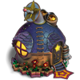

Получено: файл; исходный URL. Подписанная пиктограмма статьи, получена без перекодирования; авторство не установлено. Для статей со ссылкой на zombicity.info файл получен на другом хосте; идентичность оригиналу отдельно не проверена. Страница: источник.
Хижина пришельцев
браузерная социальная игра; историческая фанатская статья, платформа и редакция уточняются- Тип
- Постройка · телепорт
- Версия и дата
- браузерная социальная игра; историческая фанатская статья, платформа и редакция уточняются
Данные по источнику · браузерная игра; платформа не уточнена · дата публикации в URL; дата дальнейших правок неизвестна
Предварительно: Фанатский источник; единицы, показанные лишь графикой, и точная применимость к платформам требуют независимой проверки. Позднее перечисление не доказывает наличие предмета в более ранней версии.. Требуется сверка.
- Место
- Недостроенная хижина на Космическом хуторе ведёт в Погреб пришельцев. Купить нельзя.
- Строительство
- 1 старинный ключ, 10 кувалд, 5 штопоров; 300 опыта.
- Переезд
- 75 000 монет, 5 подземных фонарей и 1 факел.


Связанные сущности
- Погреб пришельцев — ведёт в локацию
- Старинный ключ — материал стадии
- Космическая хижина — Звёздный урожай 2 — локация или постройка задания